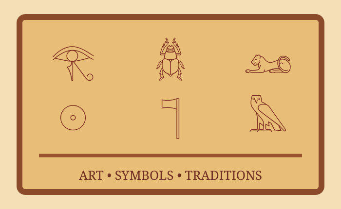

Egyptian Culture and Traditions

Egyptian culture has been shaped by thousands of years of history and by the communities living along the Nile. Ancient art, architecture, stories and religious traditions are visible in temples, tombs and museums.
Art and writing
Ancient Egyptian artists decorated buildings and objects with paintings, carvings and symbols. Hieroglyphics were used in inscriptions and records. These works help us learn about Egyptian beliefs, rulers and everyday life.
Food and daily life
Egyptian food includes bread, beans, rice, vegetables and many regional dishes. Family gatherings, music, crafts and celebrations are also important parts of contemporary Egyptian life.
A living heritage
Egypt's cultural heritage connects the ancient past with modern communities. Historic sites and museums help preserve and share this heritage with visitors.